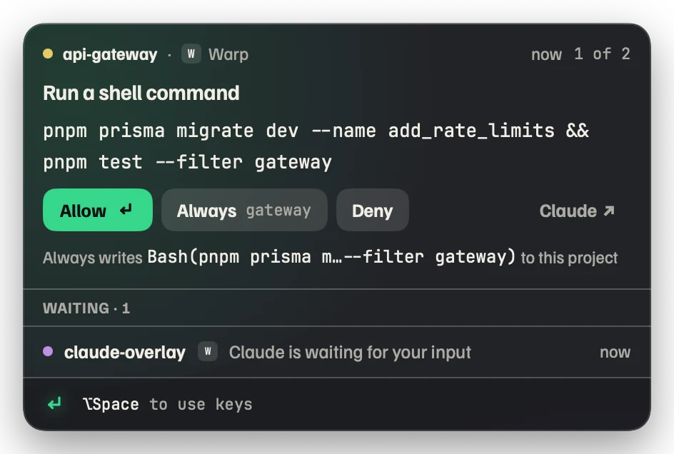
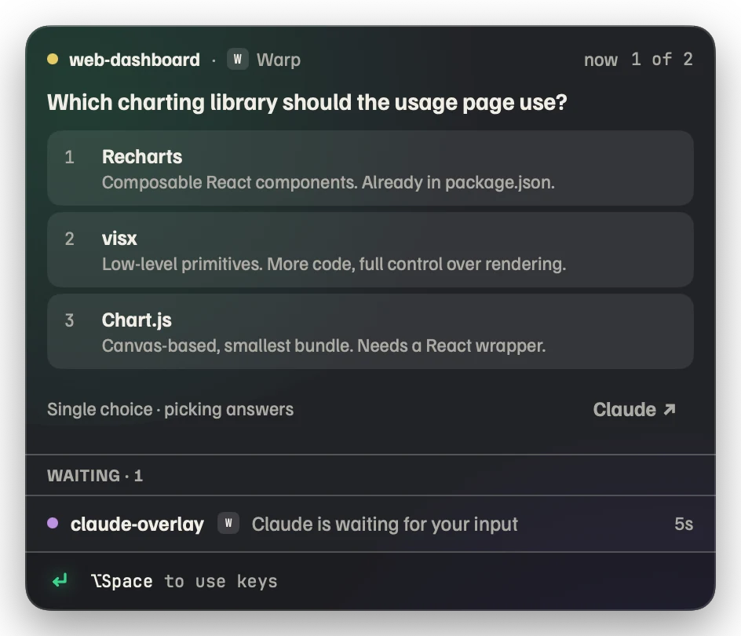
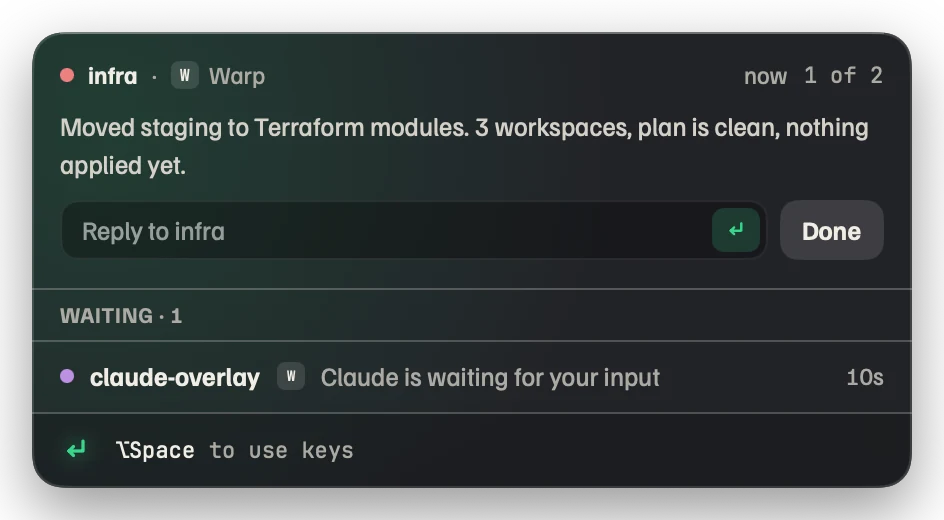
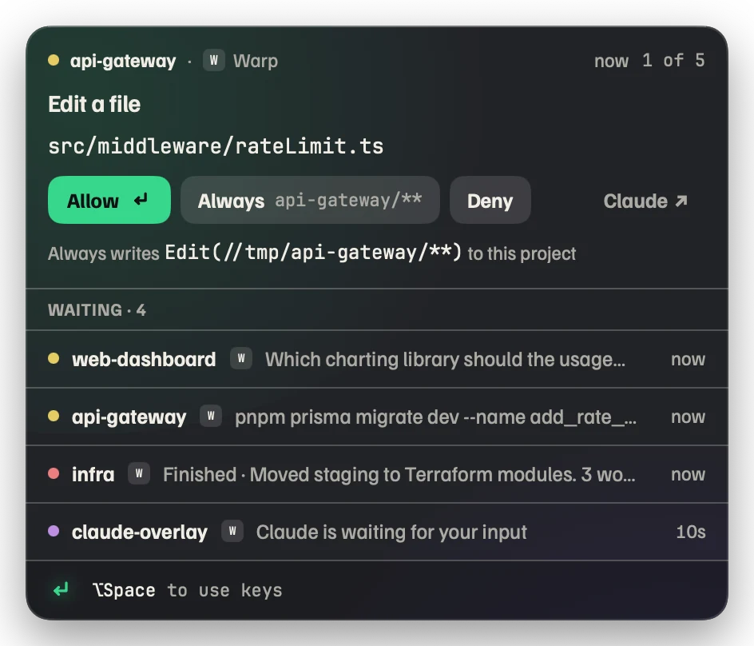

Answer ClaudeCode from anywhereon your Mac.
When a session needs you — a permission, a question, a finished task — Beckon puts a small glass panel over whatever you are doing, even a fullscreen app. Press return. Get back to work.
git clone https://github.com/bhattji007/beckon && cd beckon && ./install.sh
The panel in the corner is live. Answer it, or press ⌥Space.
Three things Claude waits on. One panel, over anything.
Keep scrolling. These are real captures from Beckon 0.9.1; only the app behind them changes.




Permission
Allow once, allow always for this project, or deny. The panel shows the exact rule “Always” will write before you press it.
Question
Multiple choice from AskUserQuestion, numbered so a single key answers. Multi-select and multi-question flows included.
Finished
The last message, in full. Type the next prompt right there and it lands in that session’s terminal.
Many at once
Sessions and subagents queue in one panel: the newest request on top, the rest waiting beneath it. Hover to peek, click to promote.
Installed in a minute. Removable in a click.
-
Download and open Beckon
Drag it to Applications. It lives in the menu bar as a small return-key mark; there is no window to manage.
-
Click “Install hooks” once
The onboarding window shows exactly which entries go into
~/.claude/settings.json. Existing hooks are kept, a backup is saved, and running sessions pick it up immediately. -
Answer from the panel
Allow, deny, pick an option or type a reply. ⌥Space focuses the panel, ⏎ is the primary action, Esc hands you back. Dismiss a request and Claude’s normal prompt appears in the terminal instead.
Works with the terminal you already use.
Beckon relies only on Claude Code’s hooks, so any host that runs Claude Code is covered. The panel shows which one is asking.
Safe to adopt on a Monday morning.
Every promise below is a mechanism, not a policy. The source is MIT-licensed and short enough to read in an afternoon.
Never worse than vanilla Claude Code
Beckon quit, crashed or never launched: the hook shim can’t reach the socket, exits in about a millisecond, and Claude shows its normal terminal prompt. Quitting Beckon releases every held prompt first.
Never approves anything you didn’t press
No auto-allow, no hidden lists. “Always” writes a regular Claude Code permission rule to the project’s .claude/settings.local.json, visible to and honoured by Claude Code with Beckon off. Every decision is appended to ~/.beckon/log.jsonl.
No network, no permissions
The only connection is an optional daily check of a small JSON file to tell you a new version exists; nothing is uploaded and nothing installs itself. No Accessibility, Screen Recording or Input Monitoring access is requested.
Never steals focus
The panel appears without taking the keyboard. If the terminal that asked is already in front, Beckon stays quiet and Claude’s own prompt shows. You opt in with ⌥Space or a click; Esc returns focus to the app you came from.
One-click removal
“Remove hooks” takes out exactly the entries it added and restores nothing else. Uninstall also removes ~/.beckon and the login item. Claude Code keeps working.
Press return. Get back to work.
Beckon 0.9.1, universal build for macOS 14 and newer. Opens in the menu bar; the first-run window installs the hooks.
git clone https://github.com/bhattji007/beckon && cd beckon && ./install.shPreview builds are not yet signed
- Open Beckon once. When macOS says it can’t verify the developer, choose Done (not “Move to Trash”).
- Open System Settings → Privacy & Security, scroll to Security, click Open Anyway, confirm with Touch ID or your password.
- Launch Beckon again. You won’t be asked next time.
Signed and notarized builds will replace this step once the Developer ID is issued. Until then, compare the SHA-256 with the checksums file before you open anything.
Questions
What does it need?
macOS 14 (Sonoma) or newer on Apple silicon or Intel, and Claude Code. No Accessibility, Screen Recording or Input Monitoring permissions. Building from source needs the Xcode Command Line Tools only.
Which terminals and editors does it work with?
Any terminal (Warp, Ghostty, iTerm2, Terminal, kitty, WezTerm and others), the VS Code and JetBrains extensions, and Claude Desktop. Hooks in ~/.claude/settings.json run in all of them, and that is all Beckon relies on.
What happens if Beckon isn’t running?
Claude Code behaves exactly as before. The hook is a tiny shim that exits immediately when it can’t reach the app, so Claude falls back to its normal terminal prompt. Quitting Beckon releases every held prompt first.
Does it phone home? What about my commands and code?
No. The only network request is a periodic check of appcast.json to tell you when a new version exists. Nothing is sent, nothing installs itself. The text on the panel comes from the hook payload on your machine and stays there; the socket in ~/.beckon is user-only.
I’m in auto permission mode and see very few requests. Is that right?
Yes. Permission requests only appear when Claude actually asks, and in auto mode it rarely does. You’ll still get questions, finished turns and idle notices. If you want permission requests, start sessions with claude --permission-mode manual.
Does it ever approve something on its own?
Never. “Always” writes an ordinary Claude Code permission rule to the project’s .claude/settings.local.json, where you can read and edit it. The panel shows the exact rule first. Every decision is logged to ~/.beckon/log.jsonl.
macOS says the app “can’t be verified” or is “damaged”.
Preview builds aren’t signed yet. Follow the three steps in the Gatekeeper note. If macOS calls the file “damaged”, the quarantine flag is in the way: run xattr -dr com.apple.quarantine /Applications/Beckon.app and open it again, but only for a download whose SHA-256 matches the checksums file.
How do I uninstall?
Choose “Uninstall” from the menu-bar menu. It removes the hook entries it added, ~/.beckon, the login item, and moves the app to the Trash. Or “Remove hooks” alone if you just want Claude’s prompts back in the terminal.